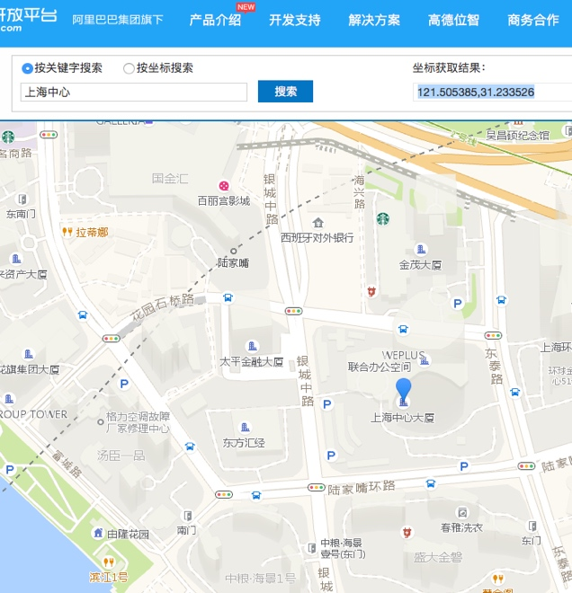
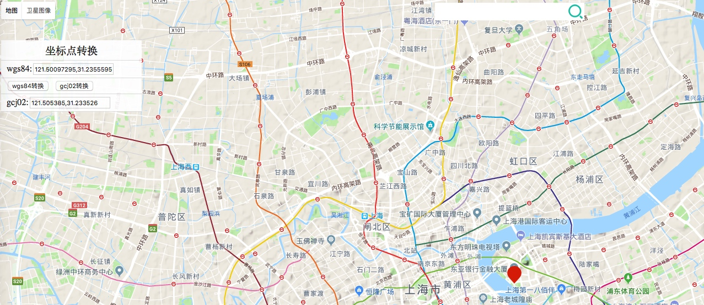
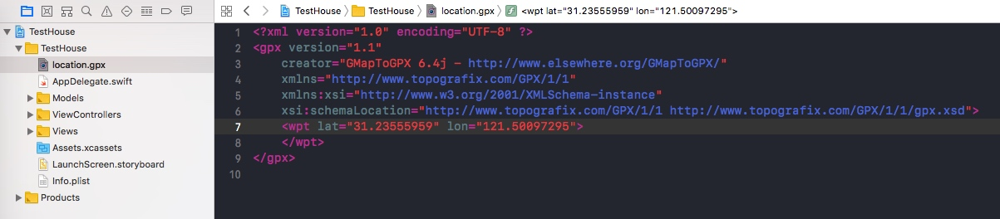
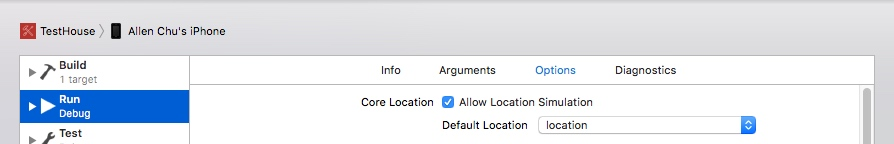

iPhone 可以利用 GPS 来精确定位所处的位置，借助得到的位置结果可以应用在众多地图类、社交类等 app 中。为了 app 的开发和测试或者一些其他目的，有时需要改变当前的定位位置来测试一些结果。本文的主题就是在不需要越狱的前提下，使用 iOS 开发最常用的 Xcode 工具来临时修改 iPhone 的当前定位位置。
背景
地图中的每一个点都有一个坐标，可以用经度（表东西方向）和纬度（表南北方向）来表示。针对于这个坐标，我们常见的有三种坐标系标准：
- WGS-84：即在 1984 年定义的世界大地测量系统（World Geodetic System, WGS），也是被广泛采用的坐标系标准；
- GCJ-02：一种基于 WGS-84 制定的大地测量系统 ，由中国国测局制定。此坐标系所采用的混淆算法会在经纬度中加入看似随机的偏移，号称可以促进国家安全🙃。目前该算法已经通过多种语言形式实现了向 WGS-84 坐标的转换。高德地图、Google Map 中国内地部分的坐标采用了此标准。
- BD-09：百度在 GCJ-02 的基础上多增加了一次变换，号称“有助保护用户隐私”🙃🙃。目前也已被反向转换。百度地图采用了此标准。
要想把定位位置改成我们想要的位置，首先要找到那个位置的经度+维度坐标，确定其使用的坐标标准，利用工具将其转换为 WGS-84 标准，获取到在 WGS-84 标准下的准确坐标。
准备
以下以「上海中心」这个地理位置坐标作为最终目标为例说明：
-

高德地图
-
Google Map
- 2.获取 WGS-84 标准的地理位置坐标：利用转换工具将获取到的 GCJ-02 标准的坐标转换成 WGS-84 标准的坐标，如下图，最终获取到的 WGS-84 坐标为
121.50097295,31.23555959。

- 3.配置一个 GPX 格式的文件：这个文件稍后会导入到 Xcode 项目中使用，文件内容如下，注意将其中的
lat和lon改成刚刚你获取到的 WGS-84 坐标。
<?xml version="1.0" encoding="UTF-8" ?>
<gpx version="1.1"
creator="GMapToGPX 6.4j - http://www.elsewhere.org/GMapToGPX/"
xmlns="http://www.topografix.com/GPX/1/1"
xmlns:xsi="http://www.w3.org/2001/XMLSchema-instance"
xsi:schemaLocation="http://www.topografix.com/GPX/1/1 http://www.topografix.com/GPX/1/1/gpx.xsd">
<wpt lat="31.23555959" lon="121.50097295">
</wpt>
</gpx>
操作
- 1.在 Xcode 中新建一个项目，并将刚刚创建的 gpx 格式文件拖入到项目中，如下图：

- 2.打开 Xcode 项目的「Edit Scheme…」设置窗口，在「Run-Option-Core Location」中选中「Allow Location Simulation」，并在「Default Location」选择刚刚添加的 gpx 文件（Default Location 中默认包含了一些全世界各个国家和地区的位置，这些位置的周围一般都有一家 Apple Store），如下图：

- 3.在 iPhone 真机上编译并运行此 app，此时手机的定位位置就已经变成了「上海中心」，可以在地图 app 或者社交 app 中查看确认。
- 4.只要不在 Xcode 中停止运行 app，这个模拟的地理位置就可以保持一段时间，在 Xcode 中停止运行 app 或者重启手机都会恢复成真实的地理位置。